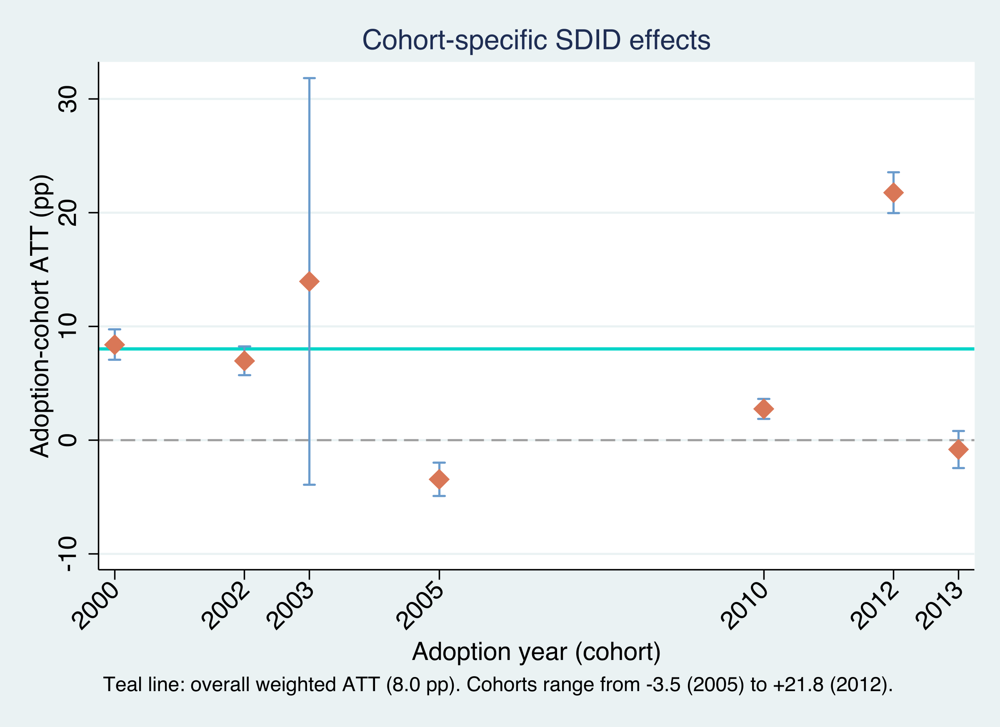
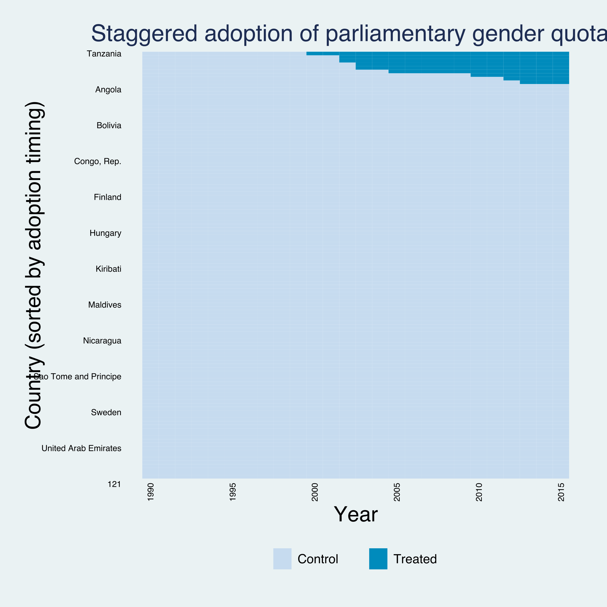
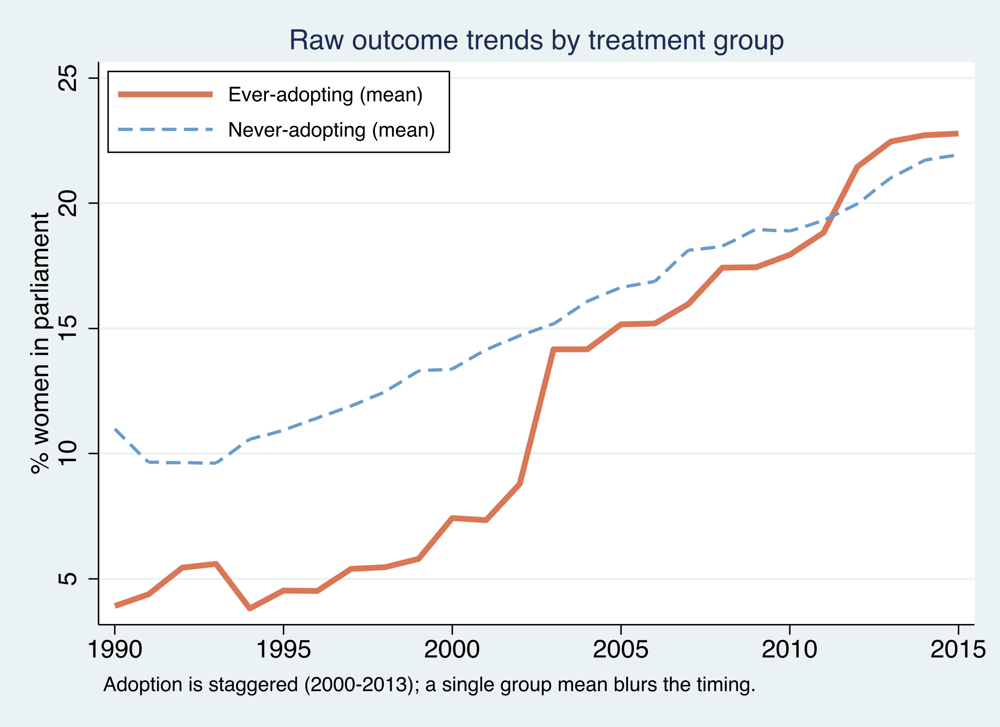
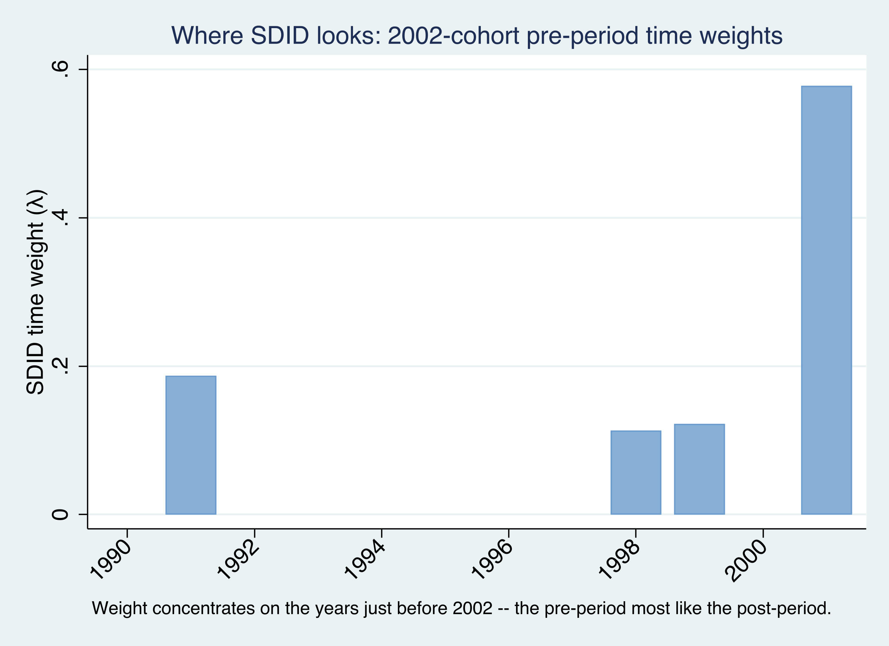
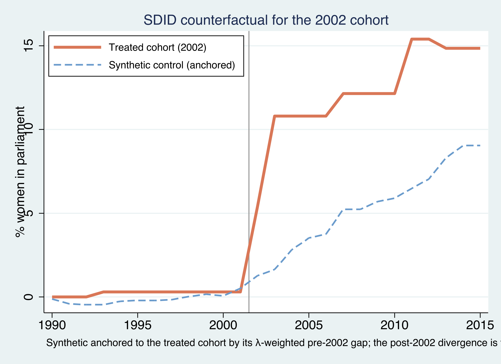
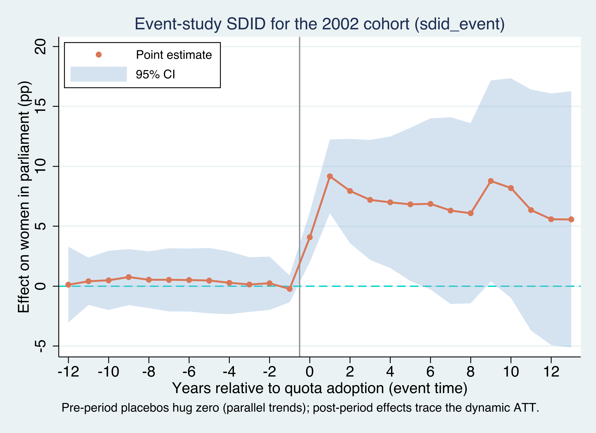
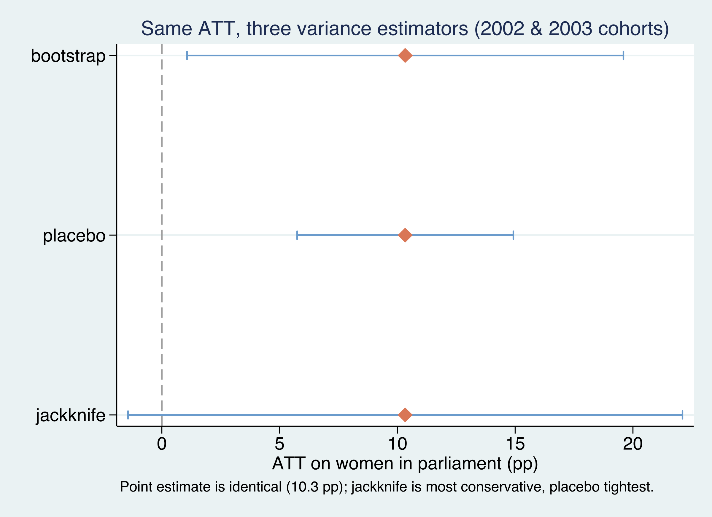

Gender quotas and women in parliament — when policies arrive on different clocks
Nagoya University (GSID)
June 11, 2026
Act I
Quotas, minimum wages, carbon taxes — different units adopt in different years. Here: 9 countries adopt a parliamentary gender quota across 7 cohorts, 2000 to 2013.
The workhorse two-way fixed-effects DiD quietly breaks: it uses already-treated units as controls for later adopters. Which comparison is even valid?

Cohort-specific SDID effects (\(\hat\tau_a \pm 95\%\) CI) with the aggregate ATT (teal). Effects swing from −3.5 to +21.8 points.
Act II
Balanced panel: \(119 \times 26 = 3{,}094\) observations. Treated country-years are scarce — only 3% of the panel.

Treatment-timing heatmap (panelview, sorted by adoption): treated cells form a staircase in the top-right, not one shared column.

Mean women-in-parliament: ever-adopting (orange) start ≈ 4% in 1990 and finish above never-adopting (blue, ≈ 22%) by 2015.
\[\left(\hat\tau,\hat\mu,\hat\alpha,\hat\beta\right)=\arg\min_{\tau,\mu,\alpha,\beta}\sum_{i=1}^{N}\sum_{t=1}^{T}\left(Y_{it}-\mu-\alpha_i-\beta_t-W_{it}\,\tau\right)^2\,\hat\omega_i\,\hat\lambda_t\]
Run a DiD, but weight each observation by a unit weight \(\hat\omega_i\) times a time weight \(\hat\lambda_t\).
Set every weight equal and you recover ordinary DiD; the weights are what make SDID special — and each solves its own optimization.
\[\hat\omega=\arg\min_{\omega_0,\,\omega\ge 0}\sum_{t=1}^{T_{pre}}\left(\omega_0+\sum_{i=1}^{N_{co}}\omega_i\,Y_{it}-\frac{1}{N_{tr}}\sum_{i=1}^{N_{tr}}Y_{it}\right)^2+\zeta^2\,T_{pre}\,\lVert\omega\rVert^2\]
The intercept \(\omega_0\) is the SDID twist: it lets the synthetic match the trend without matching the level — any level gap is absorbed by \(\alpha_i\). The ridge penalty \(\zeta^2\lVert\omega\rVert^2\) spreads weight across many donors.

SDID time weights \(\hat\lambda_t\) for the 2002 cohort: weight concentrates on the late 1990s and 2001, not a flat average over 1990–2001.
| Method | Unit \(\omega\) | Time \(\lambda\) | Unit FE \(\alpha_i\) | Must match |
|---|---|---|---|---|
| DiD | uniform | uniform | yes | trend on all controls |
| Synthetic control | optimized | uniform | no | level and trend |
| SDID | optimized | optimized | yes | trend (level gap allowed) |
Optimizing both axes — and letting the unit FE absorb the level — is what distinguishes SDID.
Estimand: the ATT under staggered timing — the effect on the units that actually adopted, averaged over their post-adoption years.
\[\widehat{ATT}=\sum_{a\in\mathcal{A}}\frac{N_{tr}^{a}\,T_{post}^{a}}{\sum_{b\in\mathcal{A}}N_{tr}^{b}\,T_{post}^{b}}\ \hat\tau_a\]
A cohort counts in proportion to how many treated country-years it contributes.
The 2000 cohort (treated 16 years) carries more weight than the 2013 cohort (treated 3). Unlike TWFE, every weight is positive and interpretable.
+8.03
overall ATT (points), SE 3.74, \(t=2.15\), \(p=0.032\) · 95% CI [0.70, 15.37] excludes zero
| Cohort | \(\hat\tau_a\) (pp) | SE | Agg. weight |
|---|---|---|---|
| 2000 | 8.39 | 0.68 | 0.170 |
| 2002 | 6.97 | 0.64 | 0.298 |
| 2003 | 13.95 | 9.13 | 0.277 |
| 2005 | −3.45 | 0.76 | 0.117 |
| 2012 | +21.76 | 0.92 | 0.043 |
The aggregate 8.03 is the weighted average; the plain mean of the seven would be ≈ 7.0.

The 2002 treated cohort (orange) vs its anchored synthetic control (blue dashed). They track pre-2002, then split — the gap is \(\hat\tau_{2002}=6.97\).
Both within 0.03 of the no-covariate 8.03 — the obvious confounder (richer countries) doesn’t account for it.

sdid_event for the 2002 cohort. Left of zero = placebo (pre-trend) tests; right of zero = dynamic ATT. The baseline is \(\lambda\)-weighted, not “year −1.”
\[\delta_{\ell}=\left(\bar Y_{\ell}^{\,tr}-\bar Y_{\ell}^{\,co}\right)-\left(\bar Y_{base}^{\,tr}-\bar Y_{base}^{\,co}\right),\qquad \bar Y_{base}^{\,g}=\sum_{t=1}^{T_{pre}}\hat\lambda_t\,\bar Y_t^{\,g}\]
The treated-minus-synthetic gap at event time \(\ell\), net of the same gap at the \(\lambda\)-weighted baseline.
Pre-period \(\delta_\ell\) near zero is the parallel-trends placebo; post-period \(\delta_\ell > 0\) is the dynamic effect.
Act III

Same point estimate (10.33 on the 2002+2003 subsample), three variance estimators: jackknife widest (SE 6.01, CI crosses zero), placebo tightest (2.34), bootstrap between (4.73).
4.7 · 6.0 · 2.3
standard errors on one ATT of 10.33 — bootstrap · jackknife · placebo. A result “significant” under placebo but not jackknife deserves caution.
Objection. Choosing controls and weights from the data can’t manufacture identification.
Response. Correct. The ATT is identified only under synthetic parallel trends per cohort, no anticipation, an absorbing treatment, and no cross-country spillovers. SDID disciplines selection and weighting; it can’t rule out timing that responds to the outcome. The flat event-study placebos support parallel trends — they cannot prove it.
−3.5 → +21.8
seven cohort effects behind one +8.03 ATT · non-negative, treated-period weighting is what makes the average honest under staggered timing